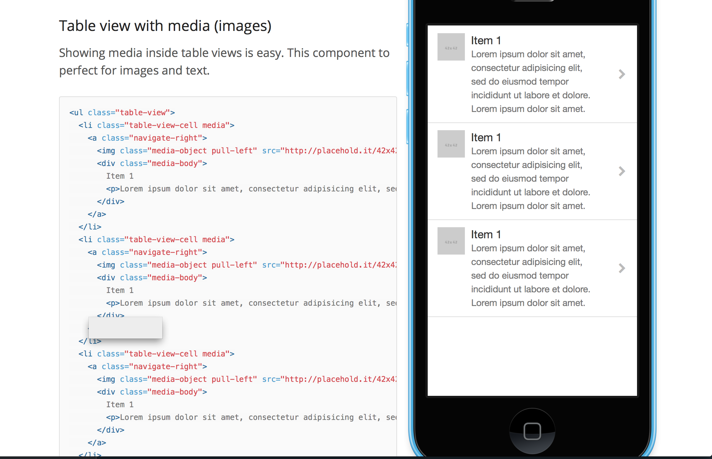
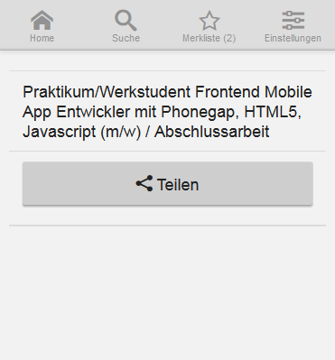

MBC: WebApps mit Cordova und Angular
09.05.2014
Motivation
Ausgangspunkt
Jobportal ohne mobile Ansicht
App als sinnvolle Ergänzung für den Nutzer
- konkrete Jobangebote suchen
- Jobs im Umkreis suchen
- Merklisten erstellen und weiterleiten
Ausgangspunkt
- API für Suchanfragen bereits vorhanden
- Interesse an AngularJS und EmberJS
- begrenzte Ressourcen(Zeit, Personal)
Entscheidung für Apache Cordova
- aus Phonegap entstanden
- Apache Projekt → Open Source
- Ist jetzt die Basis von Phonegap
- Android, iOS, OSX, Tizen
- Windows, Phone 7/8, Ubuntu
- WebOS, FirefoxOS, Blackberry
- keine Kenntnisse des nativen Frameworks nötig(Android, iOS...)
- HTML, CSS, JS
- gesamter Build-Prozess von der Kommandozeile möglich → Automation
Technologien
Cordova/Phonegap
Ratchet
Angular.js
- JS-Framework von Google
- seit 2009
-
Features:
DI, 2-way-data-binding, MVVC, HTML als Templating
Warum Angular?
- Ratchets Navigation nicht ausreichend
- Angular: Reichhaltiges Ökosystem
-
Angular vs. Ember
Can.js, Backbone.js, jQuery Mobile ebenfalls ausprobiert
Ratchet
- Stylesheets nach dem Vorbild der iOS- und Android-Styles
- unter anderem entwickelt von @fat → Twitter Bootstrap
- iOS Styles gut, Android ein bisschen sehr grau
weinre

Middleman/Coffeescript/Sass
- Middleman: Buildtool für statische Websites aus dem Rubyland (Alternativ: Yeoman)
-
+ Nutzung von alternativen Templatesprachen
Slim, Haml -
+ .. JS/CSS Alternativen (CoffeeScript, Sass, ...)
nicht Thema dieses Vortrags - + Minification
Serverseitige API
Interessante Apps sprechen i.d.R. mit einem Service
Im Vorfeld: Gedanken zur Authentifizierung
AJAX → JSONP/CORS
- Dokumentation + Konventionen der API i.A. ("Restful", Hypermedia) Grape/swagger → Dokumentation und Beispiele automatisch generieren
-
Transportsicherheit
https → Zertifikate -
API Calls public oder nur durch App verwendbar?
Hartgegossener API-Key... - Können sich Nutzer anmelden? → Oauth2 Dann will man vielleicht keine Passwörter speichern sondern sich per oauth ein Token bauen
- Rate-Limitations angebracht?
Beispiel-Code

Beispiel: Share-Button auf einer Stellenanzeige
- HTML View (Angular)
- JS-Controller (Angular)
- Cordova Interaktion
<ul class="table-view" ng-if="job">
<li class="table-view-cell">
{{job.title}}
</li>
<li class="table-view-cell">
<p>
<button class="btn-block btn btn-small" ng-click="share()">
<span class="icon-share icon"></span>
<span>Teilen</span>
</button>
</p>
</li>
</ul>
window.App = angular.module('ebmobile', ['ngRoute','ngResource','...'])
App.config(function($routeProvider) {
$routeProvider.when('/job/:jobId', {
templateUrl: 'html/job.html',
controller: 'JobController'
})
})
App.controller('JobController', function($scope, Job, $routeParams) {
$scope.job = null;
Job.get({
id: $routeParams.jobId
}, function(data) {
$scope.job = data;
});
$scope.share = function() {
var message = {
subject: $scope.job.title,
url: $scope.job.url
};
window.socialmessage.send(message);
};
});
JavaScript FFI
SocialMessage.prototype.send = function (message) {
cordova.exec(null, null, "SocialMessage", "send", [message]);
};
Java
// ...
public class SocialMessage extends CordovaPlugin {
@Override
public boolean execute(String action, JSONArray args, CallbackContext callbackContext) throws JSONException {
// ...
final Intent sendIntent = new Intent(android.content.Intent.ACTION_SEND);
// ...
cordova.startActivityForResult(this, sendIntent, 0);
}
App-Vorstellung
Next
- Notifications via GCM/APN
- iOS-App
- Bugfixes in unbekannten Android Versionen
Fazit
-
+Angular und Cordova machen Spaß
Reichhaltige und vertrautes Ökosysteme – Tools wie Weinre, Bower, Phantomjs zur Hand -
+Effektive Entwicklung
~600 Zeilen CoffeeScript Code, dank Weinre und einfachem Build leicht debugbar -
+/- Bekannte Limitierungen von Cordova
Hintergrundaktivitäten -
- Ratchet ausbaufähig, insbes. Quirks zwischen Android-Versionen
Erfahrungen? Iconicframework?
Was nutzt Ihr?
- Titanium
- Iconicframework
- AppGyver
- Native
- ...